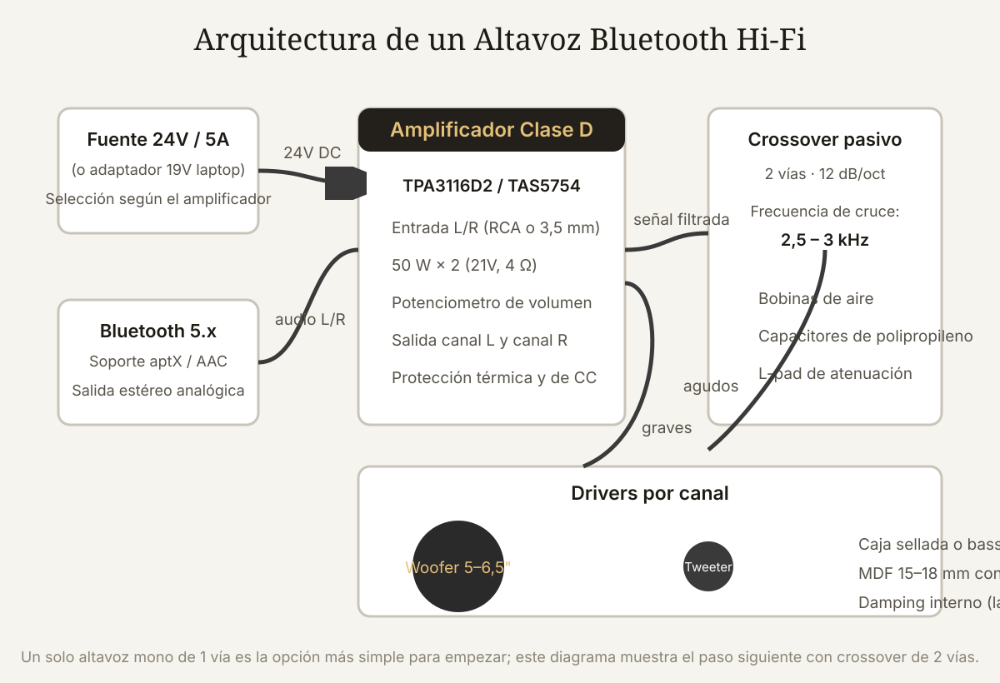

Qué cubre esta guía
- Qué significa "alta fidelidad" en un altavoz
- Diseño acústico: sellada vs. bass-reflex
- Elección de drivers: woofer, tweeter y full-range
- Amplificador clase D y módulo Bluetooth
- El crossover de 2 vías
- Construcción de la caja en MDF
- Montaje electrónico y gestión del ruido
- Medición y ajuste fino
- Presupuesto realista
- Problemas comunes y soluciones
- Conclusión
- Preguntas frecuentes
Qué significa "alta fidelidad" en un altavoz
Antes de comprar componentes, conviene definir el objetivo. Un altavoz "Hi-Fi" es aquel que reproduce la señal de entrada con la menor alteración posible: respuesta en frecuencia plana dentro del rango audible (20 Hz–20 kHz), baja distorsión armónica total (THD) y respuesta transitoria limpia. En la práctica, para un altavoz Bluetooth doméstico esto se traduce en:
- Respuesta en frecuencia razonablemente plana entre 50–60 Hz y 18 kHz, con una caída suave en los extremos.
- THD bajo (menor a 1 %) a niveles de escucha normales; los amplificadores clase D modernos lo logran fácilmente.
- Sin compresión de audio en la fuente: el Bluetooth debe soportar códecs de alta calidad (aptX, aptX HD o AAC) en lugar de SBC de baja tasa.
- Caja sin resonancias audibles: paneles rígidos y amortiguados que no canten con la música.
Un error común es gastar todo el presupuesto en drivers y descuidar la caja: un buen woofer dentro de una caja incorrecta suena peor que un woofer mediocre en una caja bien calculada. La caja es el instrumento.
Diseño acústico: sellada vs. bass-reflex
La caja controla el movimiento del woofer. Sin caja, el sonido delantero y trasero del cono se cancelan; con la caja adecuada, la presión interna actúa como un resorte que domina el comportamiento del altavoz en graves. Hay dos familias principales:
| Característica | Caja sellada (closed box) | Caja bass-reflex (con puerto) |
|---|---|---|
| Respuesta en graves | Caída suave de 12 dB/oct | Extensión mayor con pendiente de 24 dB/oct |
| Transitorios | Control más firme, menos retardo | Sensibles al ajuste del puerto; riesgo de resonancia |
| Volumen necesario | Menor | Mayor (típicamente 1,5–2×) |
| Complejidad de construcción | Simple | Requiere calcular largo y diámetro del puerto |
| Ideal para | Música con graves definidos, salas pequeñas | Más extensión de graves por el mismo woofer |
Para un primer altavoz, la caja sellada es la elección sensata: perdonas errores de construcción, no hay que sintonizar puerto y el control del cono es más predecible. Si quieres más graves, pasas a bass-reflex en el segundo proyecto.
El volumen interno recomendado para cada woofer aparece en su hoja de datos como Vas (volumen equivalente de aire) junto con Qts y Fs. Como regla general, una caja sellada de 6 a 12 litros funciona con woofer de 5–6,5 pulgadas de Qts entre 0,4 y 0,7. Calcula el volumen neto descontando el volumen que ocupan drivers, refuerzos y el puerto.
Elección de drivers: woofer, tweeter y full-range
Tienes dos arquitecturas posibles:
Un solo driver full-range. Un altavoz de cono completo de 3–4 pulgadas reproduce casi todo el espectro sin crossover. Es la opción más simple (un driver por canal), ideal para un primer altavoz mono o estéreo pequeño. El compromiso: los extremos (subgraves y agudos muy finos) se recortan y el patrón de dispersión cambia con la frecuencia.
Dos vías (woofer + tweeter). Un woofer de 5–6,5 pulgadas para graves/medios y un tweeter de cúpula para agudos, unidos por un crossover. Suena más completo y permite orientar cada driver a lo que hace bien. Es la arquitectura de este artículo y se detalla en la guía de diseño de crossover de 2 vías.
| Componente | Qué buscar | Rango orientativo de precio (USD) |
|---|---|---|
| Woofer 5–6,5" | Hoja de datos con Thiele-Small, bobina de 1", imán de ferrita o neodimio | 20–50 |
| Tweeter de cúpula blanda | Respuesta plana hasta 20 kHz, sensibilidad ~90 dB | 10–30 |
| Full-range 3–4" | Fostex, Tang Band, Dayton o equivalentes con buena respuesta | 15–40 |
Un criterio clave es la sensibilidad (SPL a 1 W/1 m): si el woofer y el tweeter difieren más de 3 dB, la rama más eficiente dominará y habrá que atenuarla con un L-pad (resistencias) en el crossover. Idealmente, elige drivers de sensibilidad parecida.
Amplificador clase D y módulo Bluetooth
Los amplificadores clase D convierten la señal en PWM de alta frecuencia y filtran la salida, alcanzando eficiencias del 85–90 % frente al 50–60 % de un clase AB. Para un altavoz a batería o fuente externa, eso significa menos calor y más volumen útil. Opciones probadas:
- TPA3116D2 (Texas Instruments): el favorito de la comunidad DIY; entrega 2×50 W a 21 V con 4 Ω y suena limpio hasta niveles altos.
- TAS5754 o TAS5805: amplificadores digitales con DSP integrado (ecualización, límites); ideales si quieres ajustar la respuesta por software.
- PAM8403 / PAM8610: muy baratos (2–5 USD) y buenos para un primer prototipo pequeño, pero con ruido de fondo perceptible y poca potencia.
El módulo Bluetooth debe cumplir dos requisitos: soportar códecs de alta calidad (aptX, aptX HD o AAC) y entregar salida analógica estéreo o salida digital I2S. Los módulos más usados son los basados en CSR8645 (aptX) y los AC6925. Evita los módulos genéricos de un dólar sin código soportado: suelen limitarse a SBC, que suena bien en podcasts pero deja la música plana.
La conexión es directa: salida L/R del módulo Bluetooth → entrada del amplificador, con un potenciómetro de volumen en medio o usando el control del propio módulo. La fuente de alimentación (24V / 4–5 A para un TPA3116) debe tener margen: un altavoz que pide 50 W pico necesita una fuente que entregue picos de 5 A sin caer de voltaje.
El crossover de 2 vías
El crossover divide la señal: envía los graves al woofer y los agudos al tweeter, en la frecuencia de cruce (normalmente 2–3 kHz para woofer de 5–6,5 pulgadas con tweeter). Un diseño de segundo orden (12 dB/octava) con alineación Linkwitz-Riley es el estándar de facto para DIY: cancela los problemas de fase en la zona de cruce y produce una respuesta suma plana si ambos drivers están en fase.
Para una frecuencia de cruce f y una impedancia nominal del driver R, los valores de segundo orden Linkwitz-Riley se calculan con:
L = R / (2 · π · f) // bobina en serie con el woofer
C = 1 / (2 · π · f · R) // capacitor en serie con el tweeter
// y las secciones paralelo de cada rama usan 2L y 2CCon R = 8 Ω y f = 2500 Hz: L ≈ 0,51 mH, C ≈ 7,96 µF. El diseño completo, el esquema y el ejemplo numérico están en la guía de diseño de crossover pasivo; los componentes se montan en una placa pequeña dentro de la caja, pegada a la pared trasera con la bobina alejada del imán del woofer para evitar interferencia.
Construcción de la caja en MDF
El MDF de 15–18 mm es el material por excelencia: denso, barato y sin vetas que resuenen. Las reglas de la buena caja:
- Corte preciso: si cortas a mano, haz guías rectas; las rendijas de 1 mm en las uniones se convierten en fugas de aire que silban. Un corte a sierra de mesa o un servicio de corte a medida en el corralón evita dolores de cabeza.
- Sellado: pega las uniones con cola blanca y refuerza con tornillos; luego sella el interior con sellante acrílico en todas las esquinas. El altavoz debe ser hermético salvo el puerto (si es bass-reflex).
- Refuerzos: los paneles grandes vibran. Coloca un travesaño de MDF entre paredes opuestas (por ejemplo, entre baffle y trasera) para romper resonancias de panel.
- Amortiguación interna: cubre el interior (sin obstruir el cono ni el puerto) con lana acústica, guata o espuma de poliuretano de celda abierta; elimina el "sonido de caja".
- Baffle: corta los agujeros del woofer y tweeter con fresadora o serrucho de calar con guía; el tweeter debe quedar al ras y centrado, y conviene redondear (chaflán) los bordes del agujero del woofer para reducir difracción.
La caja terminada se puede forrar con tela acústica, vinilo o pintura. Un acabado prolijo no suena mejor, pero convierte el proyecto en un mueble que vale la pena mostrar.
Montaje electrónico y gestión del ruido
El zumbido y el ruido son los enemigos clásicos del DIY. La mayoría se evita con tres reglas:
- Separación de tierras: las corrientes de potencia (amplificador → woofer) deben formar un lazo pequeño y no compartir trayecto con las señales de audio del módulo Bluetooth. Une las tierras en un solo punto (estrella).
- Cables de señal trenzados y cortos: el cable entre Bluetooth y amplificador es la antena de ruido; mantenlo alejado de la fuente de 24V y del propio amplificador.
- Blindaje y filtrado: un núcleo de ferrita en el cable de alimentación y, si el módulo Bluetooth queda cerca del transformador, una chapa metálica de separación a masa.
El orden de encendido también importa: conecta la batería o fuente solo cuando todo esté cableado, y comprueba cada etapa por separado (fuente → amplificador → módulo BT) antes de cerrar la caja. Cerrar una caja con un problema de ruido significa abrirla de nuevo: todo se prueba con el baffle suelto.
Medición y ajuste fino
El oído engaña: lo que parece "más agudos" suele ser resonancia, y lo que parece "más graves" puede ser distorsión. Mide la respuesta en frecuencia para tomar decisiones objetivas:
- Micrófono: un micrófono USB de medición (miniDSP UMIK-1 o similares) o el micrófono del celular con una app como Spectroid o AudioTool permiten ver el espectro.
- Señal de prueba: reproduce barridos senoidales (log-sweep de 20 Hz a 20 kHz) a volumen moderado y observa la curva en la app.
- Qué ajustar: picos estrechos en la curva = resonancias de caja (refuerza o amortigua); caídas bruscas = puerto mal sintonizado (largo del puerto); desnivel general = desbalance de sensibilidad entre drivers (L-pad).
Una herramienta más avanzada es REW (Room EQ Wizard) con un micrófono de medición: genera la respuesta en frecuencia, la impedancia y los retrasos de grupo con precisión de laboratorio, y es gratuita.
Presupuesto realista
| Componente | Opción económica | Opción recomendada |
|---|---|---|
| Módulo Bluetooth | 8 USD (SBC) | 25–40 USD (aptX/aptX HD) |
| Amplificador clase D | 10 USD (PAM8403) | 25–45 USD (TPA3116D2 2×50W) |
| Woofer 5–6,5" | 15 USD | 25–50 USD con hoja de datos |
| Tweeter | 6 USD | 12–30 USD cúpula blanda |
| Crossover (componentes) | 10 USD | 20–35 USD polipropileno y bobinas de aire |
| MDF 15 mm + herrajes | 10 USD | 15–25 USD |
| Fuente 24V | 12 USD | 20–30 USD con margen de corriente |
| Total por altavoz | ~70–90 USD | ~130–250 USD |
El total depende sobre todo del módulo Bluetooth y los drivers. El salto de calidad más importante por dólar está en el módulo Bluetooth (SBC → aptX) y en una caja bien construida y amortiguada; el amplificador de 40 USD suena casi idéntico a uno de 15 USD a niveles domésticos.
Problemas comunes y soluciones
| Síntoma | Causa más probable | Solución |
|---|---|---|
| Zumbido de 50/60 Hz constante | Lazo de tierra o cable de señal junto a la fuente | Tierras en estrella; separa cables; ferrita en alimentación |
| Ruido "digital" al mover volumen | Volumen por software del módulo BT saturado | Sube el volumen del módulo al 80 % y controla con el amplificador |
| Suena apagado, sin agudos | Tweeter fuera de fase o crossover mal conectado | Verifica polaridad y el esquema del crossover |
| El amplificador se corta solo | Protección térmica o fuente insuficiente | Fuente con más corriente; revisa ventilación |
| Graves que "boquean" o distorsionan | Puerto mal sintonizado o caja con fugas | Sella fugas; ajusta largo del puerto; baja el volumen de prueba |
| Se corta el Bluetooth a 2 metros | Antena del módulo obstruida por metal | Aleja el módulo de la chapa/fuente; orienta su antena al exterior |
Conclusión
Construir un altavoz Bluetooth Hi-Fi casero es el proyecto que reúne mecánica, acústica y electrónica en un solo objeto que usas todos los días. El resultado de un buen diseño — caja calculada, drivers con hoja de datos, amplificador clase D limpio y Bluetooth con aptX — supera con claridad a la mayoría de altavoces comerciales del mismo precio, porque estás pagando componentes, no marketing.
Empieza con una caja sellada y un solo driver full-range si es tu primera vez, o ve directo a la arquitectura de 2 vías con el crossover bien calculado: ambas rutas terminan en el mismo lugar, con un altavoz que suena a mucho más de lo que costó.
Preguntas frecuentes
¿Qué tan difícil es construir un altavoz Bluetooth casero?
Es un proyecto de fin de semana para alguien con experiencia básica en electrónica y herramientas de carpintería. El nivel de dificultad real está en la caja (corte y sellado) y en el cableado ordenado; la electrónica en sí es conectar cinco bloques. Si es tu primer proyecto, usa un driver full-range (eliminas el crossover) y una caja sellada: baja el riesgo sin sacrificar el resultado.
¿Necesito batería o puedo usar una fuente de pared?
Ambas funcionan. Una fuente de 24V/4-5A es más simple y barata, pero ata el altavoz a un enchufe. Con batería Li-ion (por ejemplo, 6 celdas 18650 en 3S2P con BMS, unos 21-25V nominales) el altavoz es portátil; en ese caso elige un amplificador que funcione bien con el voltaje de la batería y ten en cuenta que la autonomía con música a volumen medio ronda las 4-8 horas con 2.000-4.000 mAh efectivos.
¿Cuánto dura la batería de un altavoz Bluetooth casero?
Depende del consumo: un amplificador clase D de 2×25 W rms consume alrededor de 1,5-2 A a 24V con música a volumen medio. Con un pack 3S de 5.000 mAh (unos 55 Wh), eso da entre 4 y 7 horas de reproducción realista. A volumen alto el consumo se duplica, así que define el pack según tu uso: uso doméstico con fuente, uso portátil con pack grande.
¿Por qué suena mejor con aptX que con SBC?
El códec SBC estándar del Bluetooth funciona en modo conservador en la mayoría de los teléfonos (tasa de bits baja), lo que recorta las frecuencias altas y añade artefactos. aptX y aptX HD transmiten más bits por segundo y preservan mejor la señal original; AAC hace lo propio en iPhones. La diferencia se nota sobre todo en platillos, voces y texturas; en podcasts o música ambiental es casi imperceptible.
¿Puedo convertir un altavoz viejo en Bluetooth?
Sí, y es el proyecto más rentable: si el altavoz (la caja y los drivers) está sano, solo necesitas añadir un módulo Bluetooth con salida analógica conectado a la entrada del amplificador existente o reemplazar el amplificador completo por un TPA3116. En altavoces de estantería pasivos necesitarás amplificador interno; en activos, un módulo Bluetooth a la entrada suele bastar. Mide el altavoz antes de gastar: si el woofer tiene la suspensión rota o la bobina suena raspada, no vale la pena.
Este artículo es contenido editorial independiente: no contiene ubicaciones patrocinadas ni enlaces de afiliado. Si en futuras actualizaciones se agregan enlaces a proveedores de componentes, serán identificados explícitamente. El código y las conexiones son referenciales y deben adaptarse y probarse con tu propio hardware. Si detectas un error en esta guía, por favor avísanos.
Sigue aprendiendo
Aprende a calcular los componentes exactos de la división de frecuencias en la guía de diseño de crossover pasivo de 2 vías, y si te interesa el procesamiento de audio por software, compara placas en Teensy 4.1 vs Arduino Due.
Fuentes primarias y lecturas recomendadas
Referencias que sustentan el diseño acústico, la selección de amplificadores clase D y la teoría de cajas y crossover. Las especificaciones exactas dependen de la hoja de datos de cada driver.
- Texas Instruments — Hoja de datos del TPA3116D2
- TI — Nota de aplicación sobre clase D y diseño de filtros de salida
- AudioScienceReview — Debate técnico sobre códecs Bluetooth
- REW — Room EQ Wizard, software de medición acústica
- Parámetros Thiele-Small (definición y uso)
- Parts Express — Artículos de aprendizaje sobre diseño de altavoces
Enlaces revisados: 15 de agosto de 2026.